Explorez une galerie de portraits et de caricatures originales, entre expression, observation et humour. Les commandes personnalisées sont étudiées ponctuellement, selon les disponibilités.
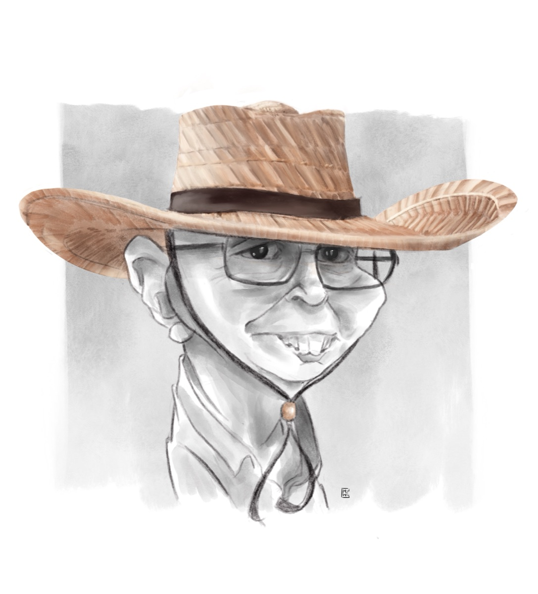
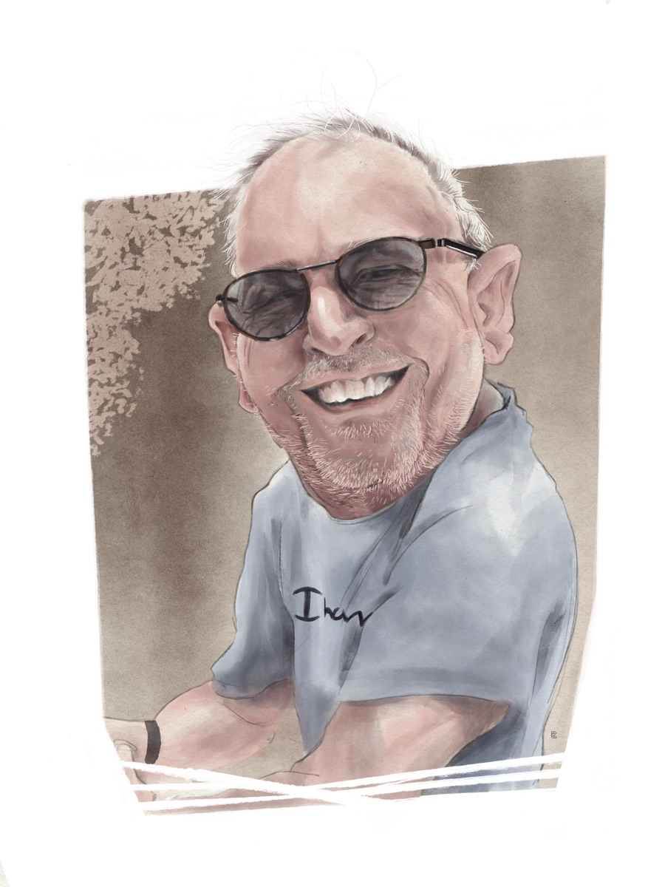
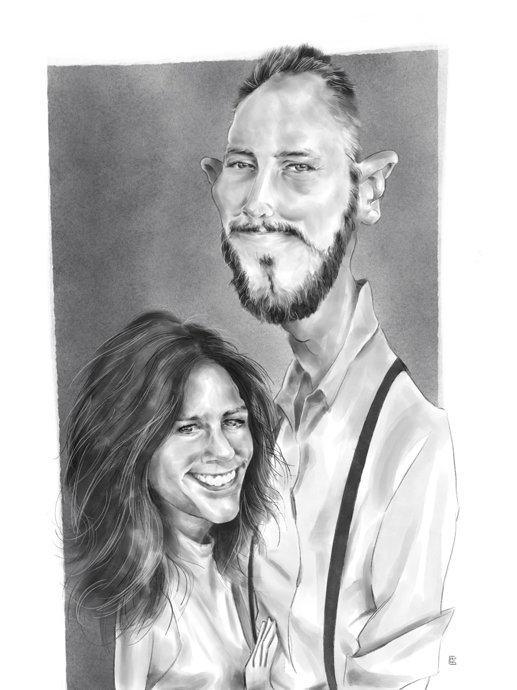
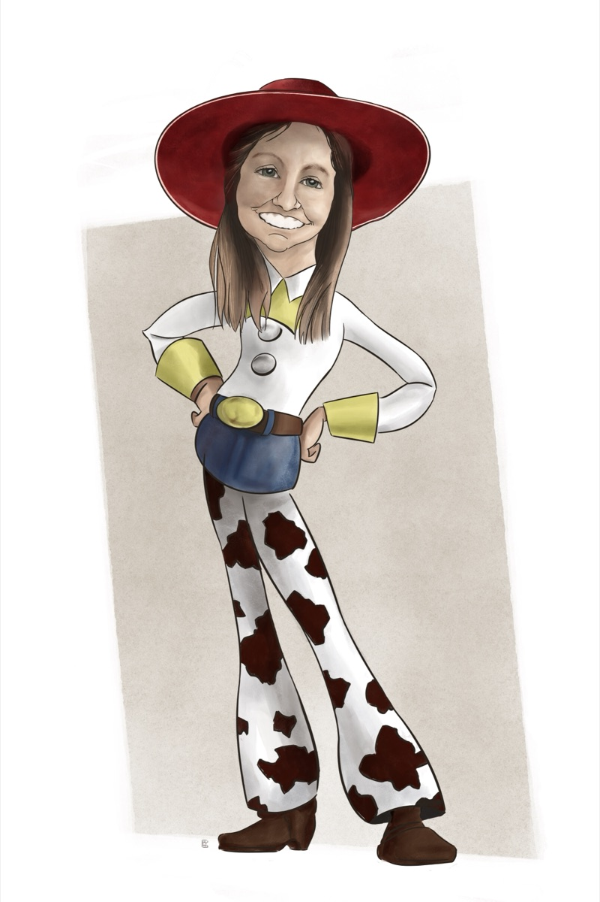
Des plateaux de cinéma aux scènes de concert, des bibliothèques aux stades : aucune célébrité n'échappe au crayon.
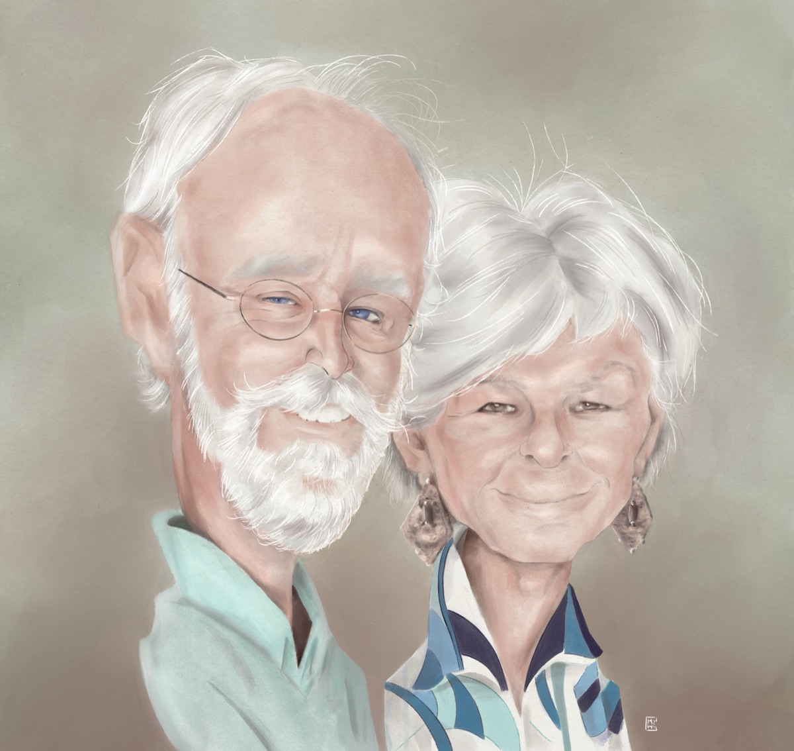
Portraits & familles Commandes sur mesure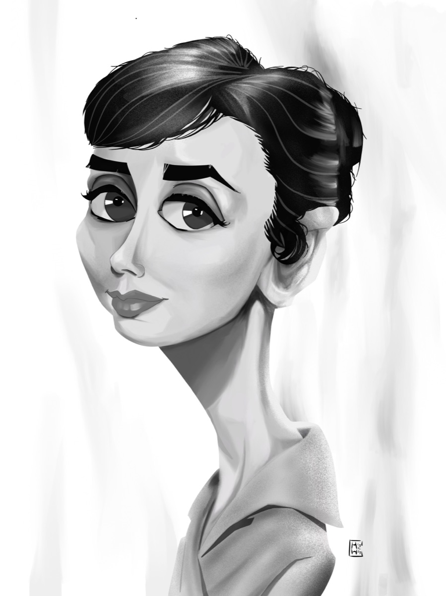
Acteurs & cinéma Stars du grand écran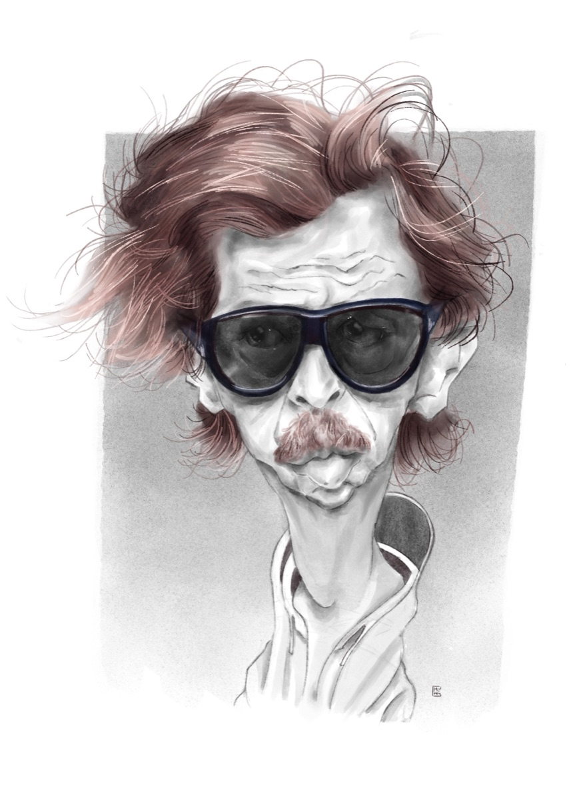
Chanteurs & musiciens Voix légendaires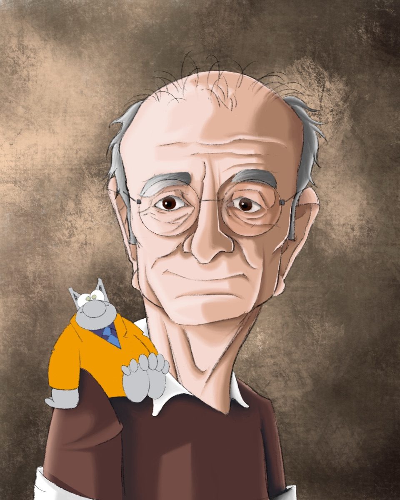
Écrivains & artistes Plumes et pinceaux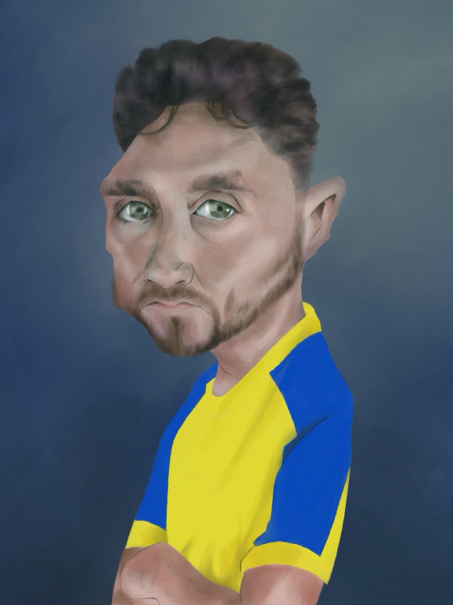
Sportifs Champions & légendes Personnages Illustrations & scènes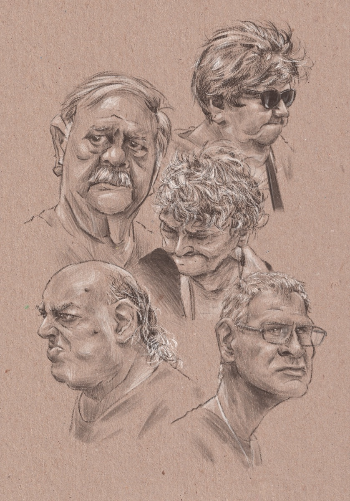
Croquis & études Les coulisses du trait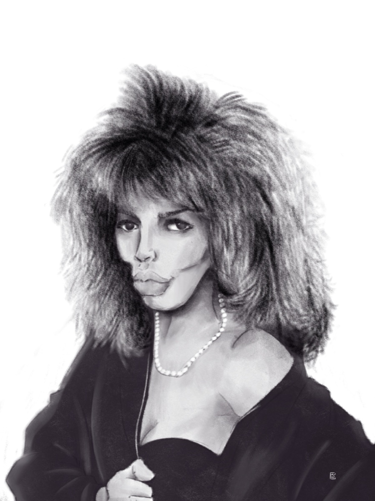
Personnalités Télé, humour & médiasUn aperçu des caricatures récentes. Certaines œuvres originales sont disponibles à la vente dans la boutique.
Chaque visage a un trait signature : une mèche, un sourire, un regard. C'est ce détail qui fait toute la caricature.
Le trait s'affûte, les proportions dansent. Le but : rester ressemblant tout en poussant l'humour au maximum.
Encre, aquarelle ou travail numérique : chaque œuvre est finalisée selon le style et l'usage souhaité.
Les demandes de portraits et de caricatures sur mesure sont examinées au cas par cas. La réalisation dépend du calendrier artistique et d'une confirmation préalable.
Découvrir les modalitésLes expositions et événements sont l'occasion de découvrir les caricatures autrement. Retrouvez ici les rendez-vous confirmés et les archives, au fil des participations.
Voir les expositionsDécouvrez les œuvres et les possibilités d'acquisition lorsqu'elles sont proposées. La boutique n'est pas encore ouverte.